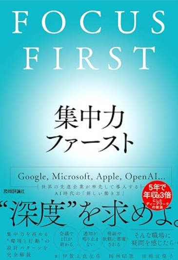

FOCUS FIRST LAB
AI時代に、
成果を生む時間を取り戻す。
会議、通知、雑務に追われる毎日から、重要な一つに深く集中できる働き方へ。個人・チーム・学習の目的に合わせて、実践記事を選べます。
読む順番に迷った方へ → まず読む3記事START HERE
はじめての方は、ここから。
全体像、3つの仕事モード、毎日の実践方法を、この順番で理解できます。
TOPICS
集中力を、6つのテーマで体系的に学ぶ。
関心のあるテーマを選ぶと、対応する記事だけを表示します。

BOOK｜発売中
断片的なコツを、
続けられる仕組みに。
集中の基本、3つの仕事モード、時間・環境・体調の整え方、組織への導入までを体系的に学べます。
- 著者
- 伊賀上真左彦・岡林昭憲・田嶋江梨子
- 出版社
- 技術評論社
- 発売日
- 2026年8月13日
- 定価
- 2,420円（税込）
当サイトはAmazonアソシエイト・プログラムに参加しています。サイト内のリンク経由の購入により、紹介料を受け取る場合があります。
FOR TEAMS
チームで実践する「集中力ファースト」。
個人の工夫だけでなく、会議、通知、集中時間、職場環境まで、チームに合う形で設計します。企業研修、講演、ワークショップに対応します。
- 管理職・新入社員・リスキリングに対応
- オンライン・対面に対応
- 60分の講演から半日の研修まで調整可能